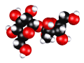
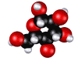

But by the 1940s, corn refiners and food producers were using the term dextrose to refer to any kind of sugar derived from corn. In any event, corn sugar, glucose, corn syrup, and dextrose pretty much mean the same thing as far as the chemistry of sugars goes. In many contexts today, the word glucose is reserved for the sugar that is zooming around in your blood, while the term “dextrose” refers to the corn sugar that is chemically identical but hasn’t entered your blood stream yet.
 